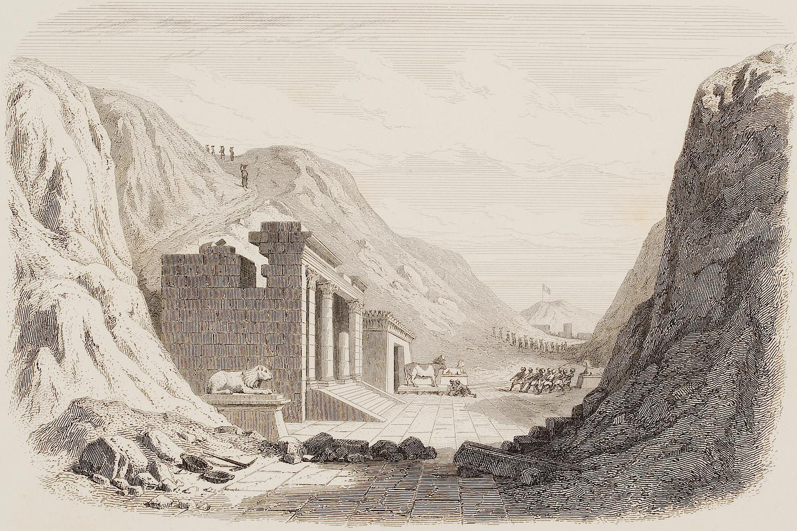

5. The Mission - Part 1
If aliens did visit us, what was their mission? Is the Annunaki a set of gods or something more sinister? Is there a hideous creature hidden away in Saqqara Egypt? Was Homo Erectus victims of genetic experiments?
We head out with our host Fredrik once more to discover what is genuine, fake, and somewhere in between. In this first episode of the year we dig down into episode 3 of Ancient Aliens. Join us on an all new adventure into the world of Ancient Aliens.
Sources, resources and further reading
THE ESCUINTLA HOARDS TEOTIHUACAN ART IN GUATEMALA
O’Connor, Sue 1999, ‘30,000 years of Aboriginal occupation, Kimberley North West Australia’, Terra Australis, vol. 14, Department of Archaeology and Natural History and
Centre for Archaeological Research, The Australian National University, Canberra
The Writing system of ancient Teotihuacan - Karl Taube
https://blog.britishmuseum.org/a-library-fit-for-a-king/
Klein, R.G. 2009. The Human Career: Human Biological and cultural origins. 3rd ed. Chicago University Press
Scarre, Christopher (red.) (2009). The human past: world prehistory & the development of human societies. 2. ed. London: Thames & Hudson
Hudson, A. "Cattle Mutilation." Skeptoid Podcast. Skeptoid Media, 3 Mar 2015.
https://digi.ub.uni-heidelberg.de/diglit/mariette1882bd1/0136/text_ocr
Altenmüller, Hartwig, Schulz, Regine & Seidel, Matthias (2014). Egypten: faraonernas värld. [Ny utg.] Köningswinter: H. F. Ullman
The Archeology of Horseshoe Canyon - National Park Service - U.S. Department of the Interior
Bender, H. (2017). The Star-Beings and stones: Petroforms and the reflection of Native American cosmology, myth and stellar traditions. Journal of Lithic Studies, 4(4), 77-116. https://doi.org/10.2218/jls.v4i4.1918
Music used in this episode:
Music: “Now we ride” by Alexander Nakarada (serpentsoundstudios.com)
Licensed under Creative Commons BY Attribution 4.0 License